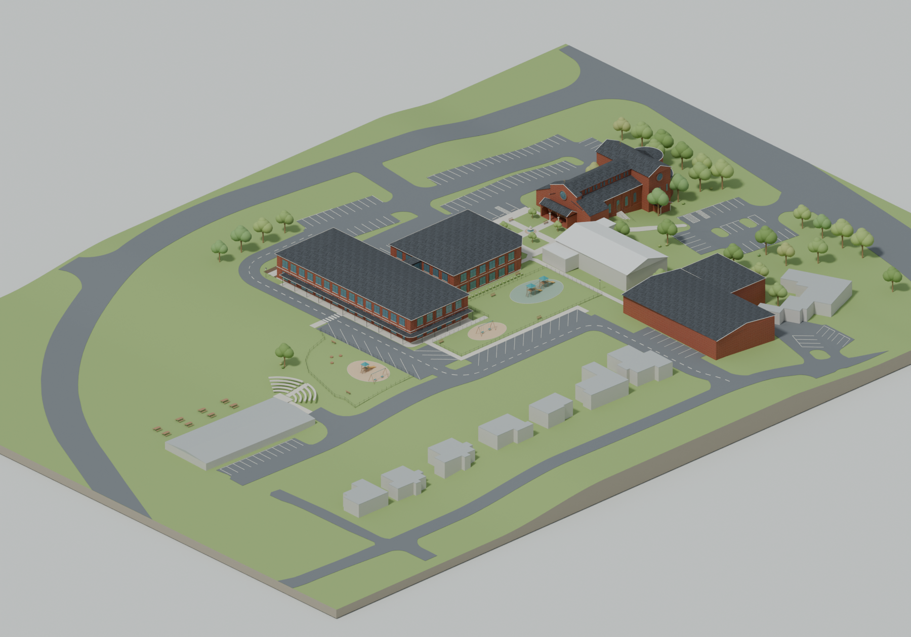

OUR LADY OF THE ROSARY
A new campus, together.
Exterior concept · Greenville, South CarolinaDownload model


Preparing your campus…
The interactive model could not load.
The rendered overview is still available. Try reloading, or download the model to explore in Blender.